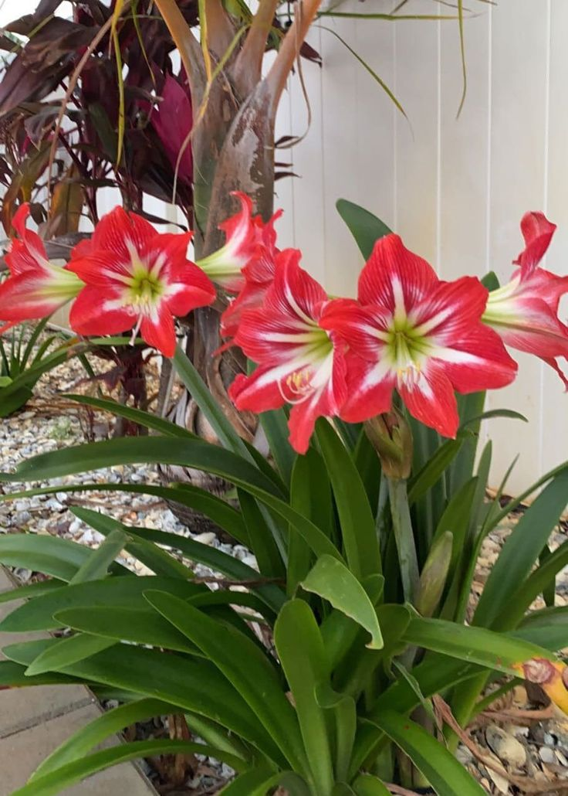
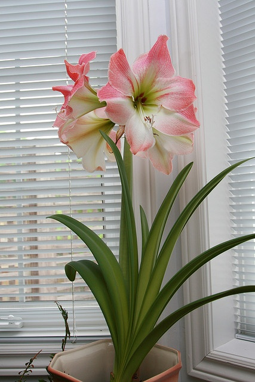
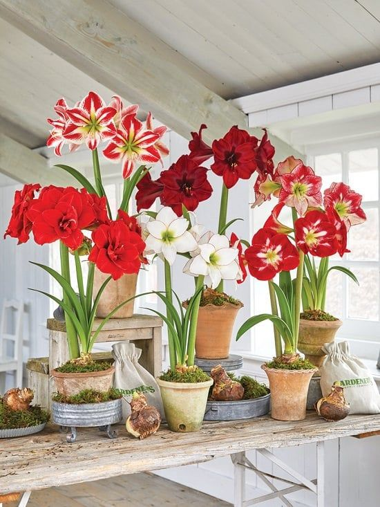
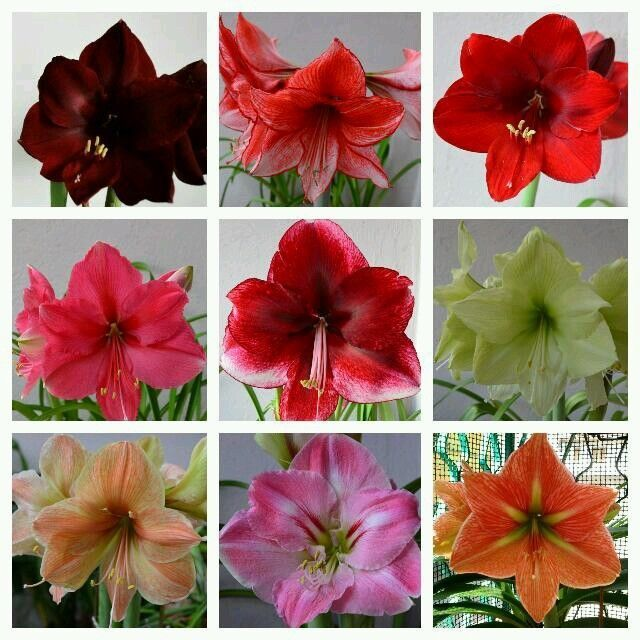
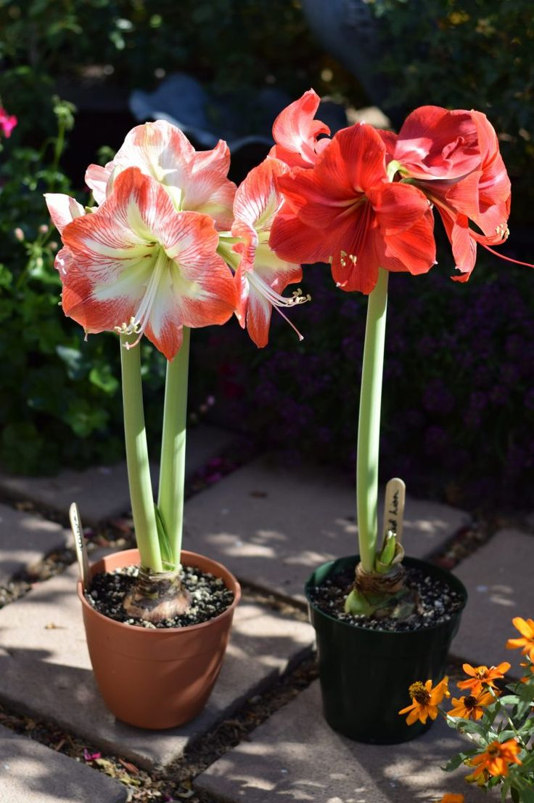
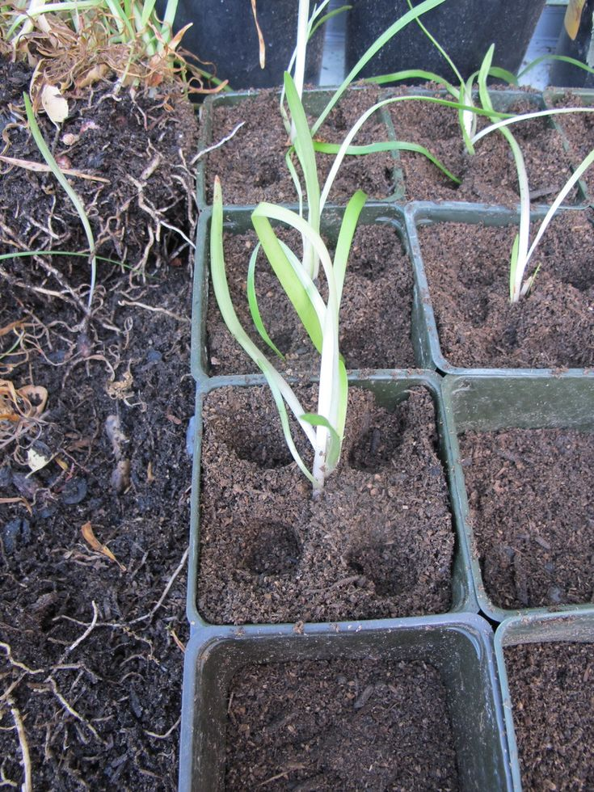

Amaryllis (Hippeastrum spp.)


General Information
Scientific Name: Hippeastrum spp.
Family: Amaryllidaceae
Type: Herbaceous bulbous plant
Height: 1 to 2.5 feet tall
Uses of Amaryllis:
- Ornamental: Valued for its large, showy blooms in gardens and indoor pots.
- Gift Plant: Popular as a holiday or seasonal gift plant due to vibrant winter blooms.
- Indoor Display: Frequently grown indoors in decorative containers.
Medicinal & Traditional Uses:
- Used cautiously in traditional medicine in small quantities for treating swelling or bruises.
- Some compounds under study for neurological research (toxic if improperly handled).
- Warning: Bulbs are toxic if ingested; keep away from pets and children.


Description
Amaryllis is known for its large, trumpet-shaped flowers, often blooming in late fall or winter. The flowers can be red, pink, white, or striped, and grow on tall stalks without leaves during blooming time. The strap-like leaves appear afterward.
Habitat & Growth
- Native Regions: South America, especially the Andes and Brazil
- Soil: Well-draining, rich, slightly sandy soil
- Sun: Prefers bright, indirect light or filtered sun
- Watering: Moderate; reduce after flowering to allow dormancy


Propagation
Amaryllis is commonly propagated through bulbs or bulb offsets. After flowering, bulbs are stored dry during dormancy, then replanted. It can also be propagated via seeds, though slower and less reliable for hybrid traits.
Fun Facts & Cultural Significance
- The name “Amaryllis” comes from Greek poetry, symbolizing pride and beauty.
- Often associated with Christmas and New Year as a festive bloom.
- Each bulb can produce multiple flowers from a single stalk.
- Amaryllis flowers are used in floral competitions and home decor globally.